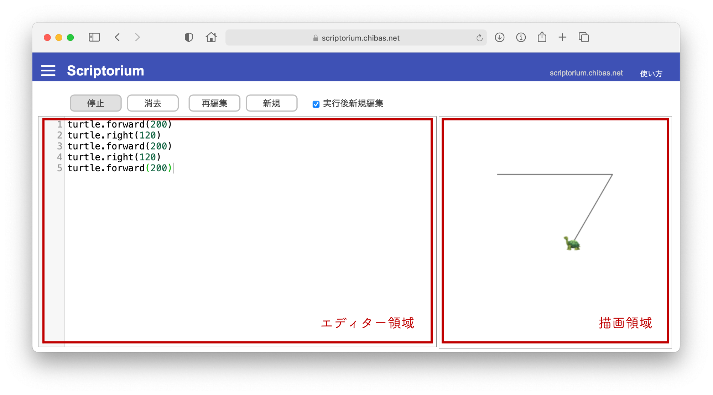
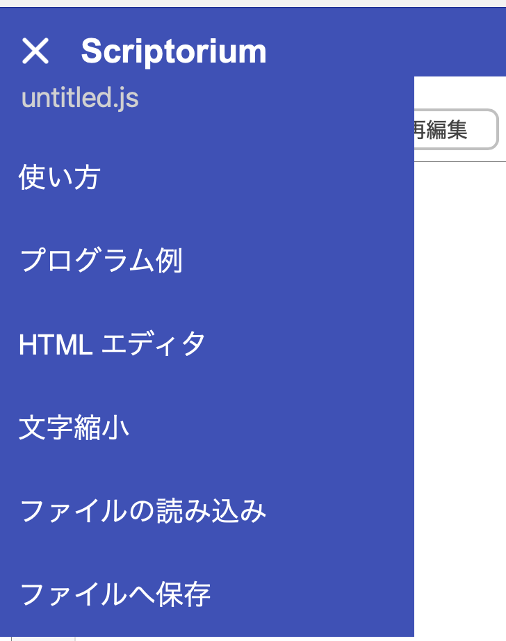

Scriptorium（スクリプトリアム）は JavaScript 言語でプログラムを書くための簡単なプログラミング環境です。 タートルグラフィックスや Processing 言語風のプログラミングの機能もついています。 書籍「１４歳からのプログラミング」（千葉 滋・東京大学出版会・2021年）のために作成されました。
以下では使い方を簡単に説明します。 プログラム中で利用できる関数（メソッド）等はそれらの一覧を見て下さい。
使い方

画面構成
- エディター領域
- 描画領域
動かしたいプログラムをこの四角い枠の区画（ペイン）の中に書く。
プログラムが描く絵はこの四角い枠の区画（ペイン）の中に表示される。
主要ボタン
- 実行
- 消去
- 再編集
- 新規
エディタの中に書かれたプログラムを実行する。
図が描かれる領域（ペイン）の中を白く塗りつぶして消去する。
直前に実行したプログラムを再度エディタの中にコピーして表示する。
エディタの中に書かれたプログラムを消去する。
チェック欄
- 実行後新規編集
チェックされていると、プログラムの実行後にそのプログラムをエディタの中から消去する。チェックされていないと、プログラムをそのままエディタの中に残す。チェックされていても、プログラムに間違いがありエラーで実行が失敗した場合はプログラムを消去しない。
メニューボタン
左上すみのメニューボタンをクリックするとプルダウンメニューが表示される。
- × 印
- 使い方
- プログラム例
- Scratch 風エディタ
- HTML エディタ
- 文字縮小（文字拡大）
- ファイルの読み込み
- ファイルへ保存
プロダウンメニューを非表示にする。
このページを表示する。
プログラムの例を示したページを表示する。 プログラム例の下の「選択」ボタンをクリックすると、ページの一番下のエディター領域にプログラムがコピーされる。 実行ボタンを押せばコピーされたプログラム例を実行できる。
Scratch 言語風にブロックを組合わせて JavaScript プログラムを書くためのエディタを表示する。
HTML ファイルの編集用のエディタを表示する。
表示に使われる文字を小さくする（大きくする）。
パソコン等に保存されているファイルを選び、そのファイルの中に保存されているプログラムを読み込む。読み込んだプログラムはエディタの中に表示される。前に「ファイルへ保存」メニューで保存したプログラムを再びエディタの中に表示したいときなどに使う。
エディタの中のプログラムをファイルに保存する。ファイル名にはこのプルダウンメニューの一番上の欄に書いた名前が使われる。とくに変更しなければ untitled.js。変更する場合は名前の部分をクリックして変更する。
ファイルの保存場所は利用しているブラウザや機器によって異なるが、普通はダウンロード・フォルダーに保存される。
本プログラミング環境について
本プログラミング環境は実行中に外部のサーバと通信することはありません。このため書いたプログラムが外部に送信されることはありません。全ての情報は手元のパソコンやタブレットの中に留まります。
また必要なファイルを事前にすべてダウンロードしておけば、インターネット接続がなくても本プログラミング環境を利用することができます。 必要なファイルは https://github.com/chibash/scriptorium からダウンロードできます。
ただし本プログラミング環境はページビューの測定のために Google Analytics を利用しています。したがってこのページを見たという情報が Google に送信されます。
本プログラミング環境は内部で CodeMirror、JSHint、そして Blockly を利用しています。